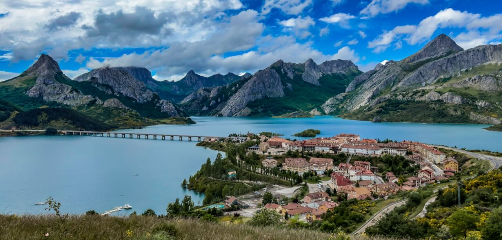
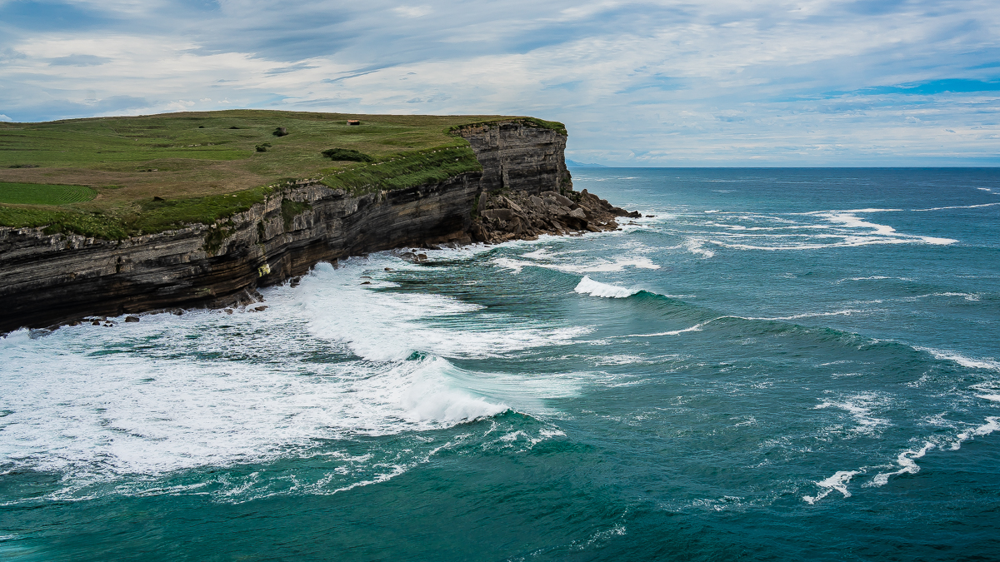
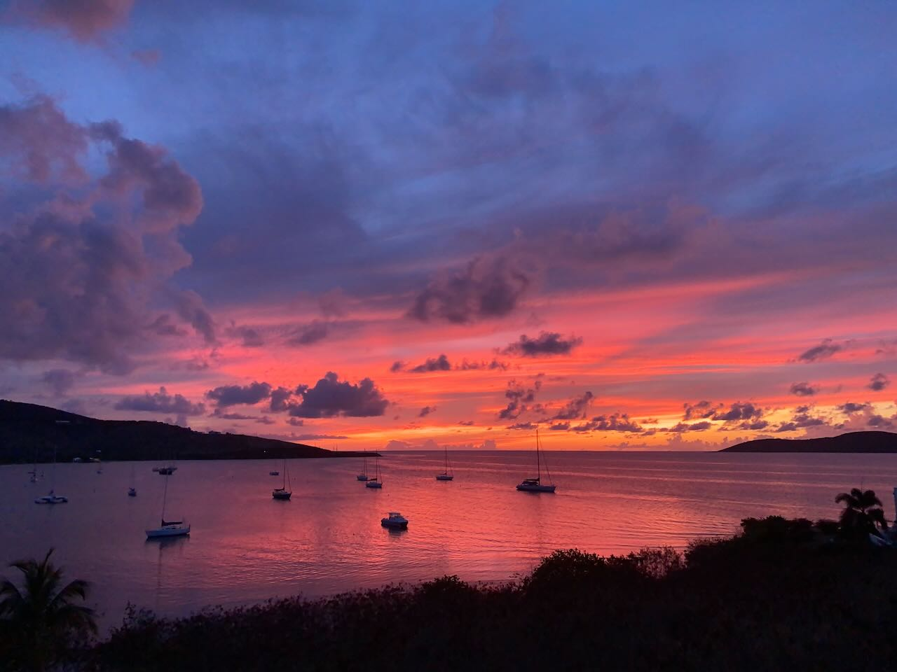
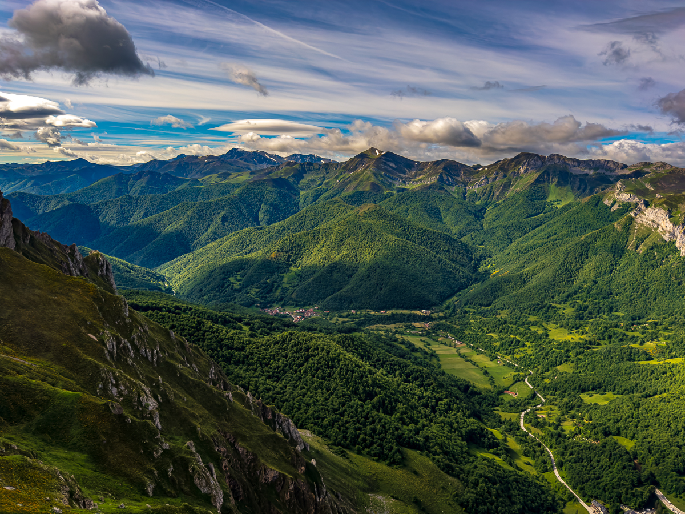
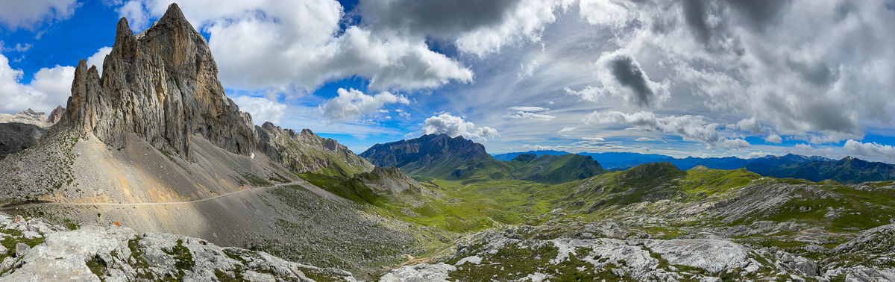
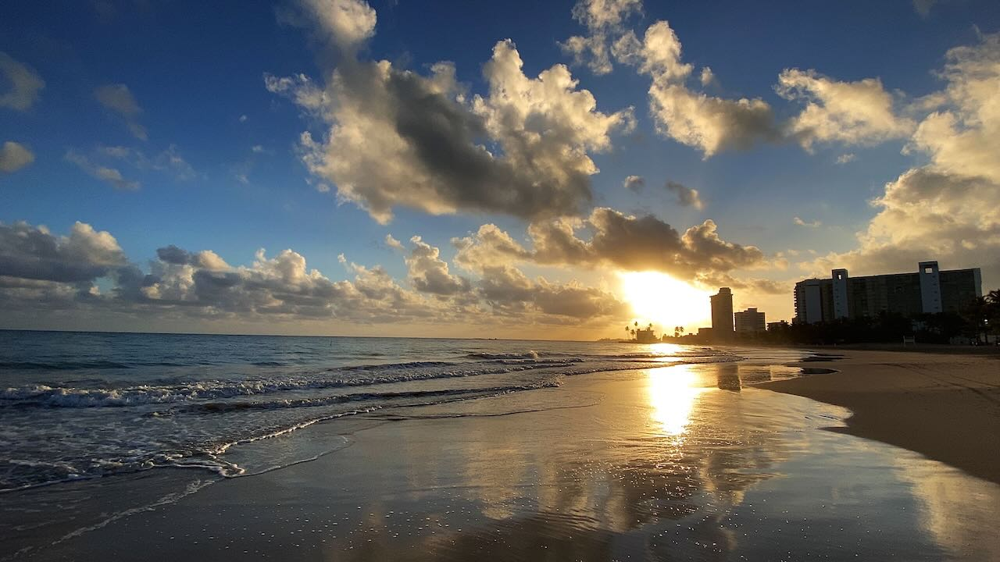
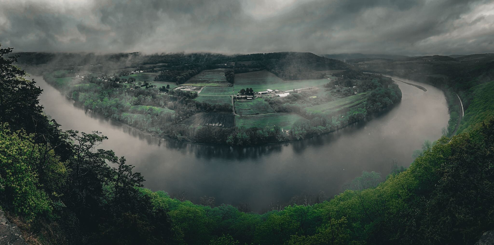
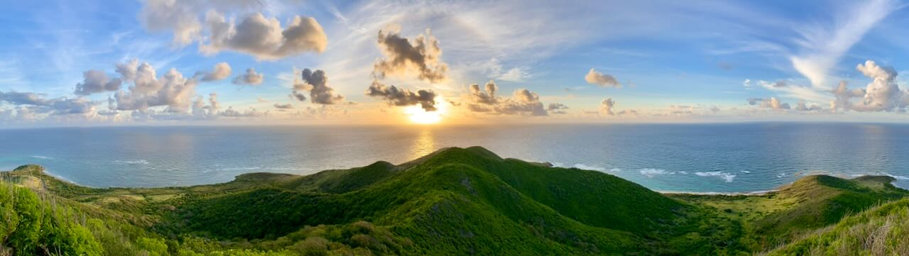
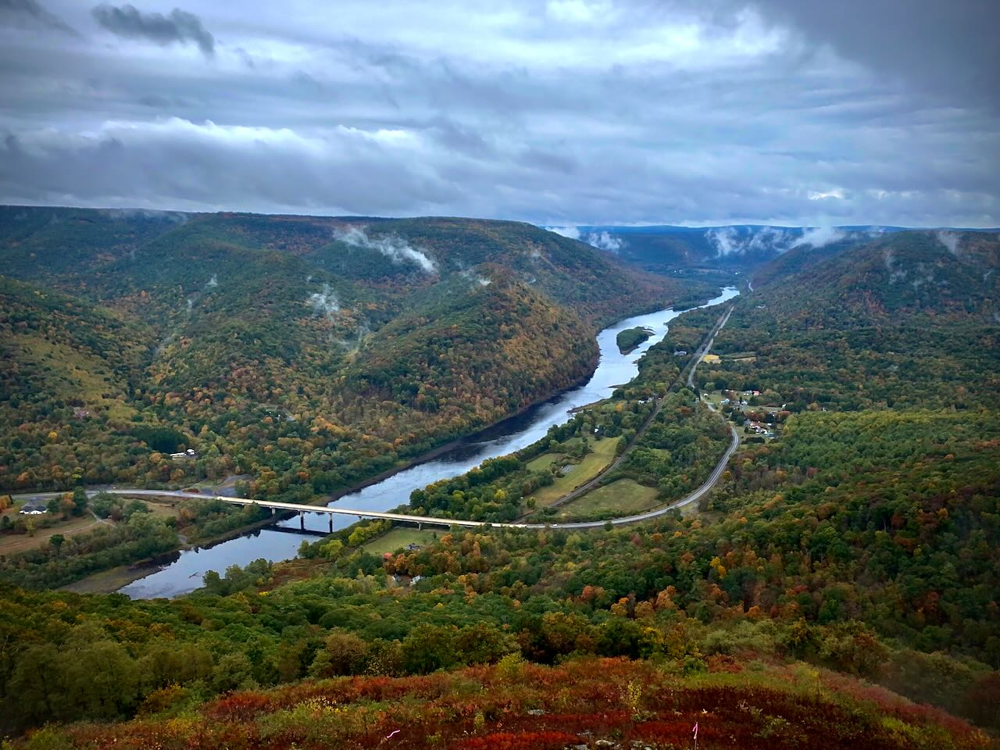

Landscapes
Landscape photography captures the beauty of the natural world. These images showcase the diverse terrain and dramatic lighting that make each location unique. Each photograph invites you to pause and appreciate the magic of our planet.









| Setting | Typical Range | Purpose |
|---|---|---|
| Aperture | f/8 - f/16 | Maximize depth of field for sharpness throughout the scene |
| Shutter Speed | 1/60s - 1/250s | Fast enough to avoid camera shake, slower for water blur effects |
| ISO | 100 - 400 | Keep low for maximum image quality and minimal noise |
| Focal Length | 16mm - 35mm | Wide angle to capture expansive scenes and dramatic perspectives |
| Focus Mode | Manual / Single AF | Precise control over focus point, often at hyperfocal distance |